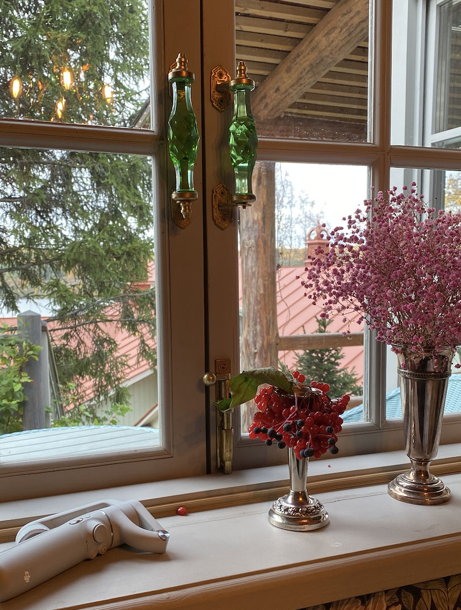
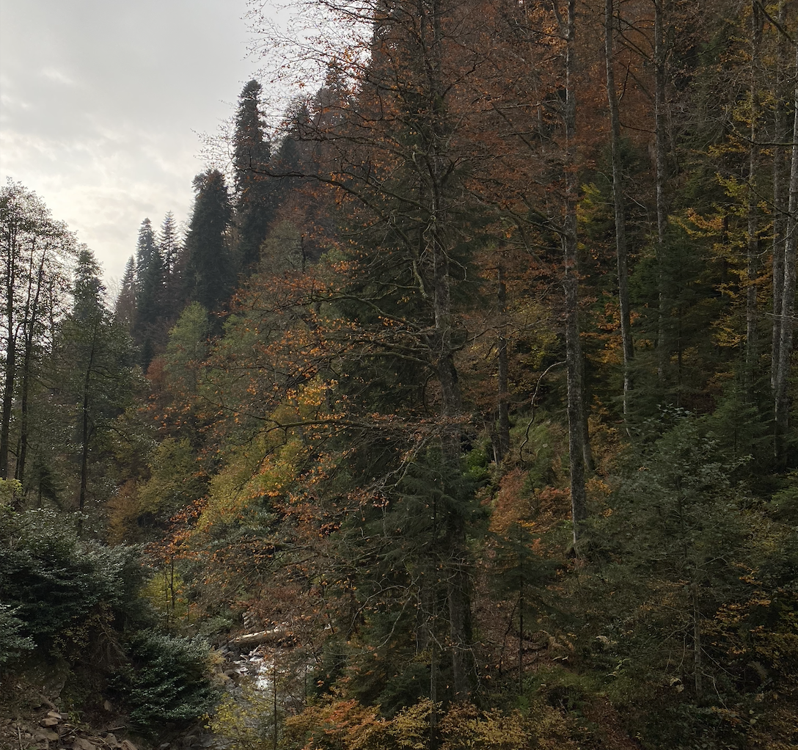

|  | Город на золотом кольце "Плес"Город на Волге, административный центр Плёсского городского поселения в составе Приволжского района Ивановской области. Входит в перечень исторических поселений федерального значения. Самый популярный у туристов город области: входит в четвёрку самых посещаемых туристами малых городов России и занимает первое место в стране по числу туристов на одного жителя. Население - 1734 чел. Промышленных предприятий в Плёсе нет. Плёс входит в четверку самых посещаемых малых городов России и первое место по числу туристов на местное население в нашей стране. Туристы приезжают сюда, чтобы воочию увидеть те щемящие душу пейзажи с картин, известных с детства. Гостей города очаровывает сохранившаяся атмосфера старинного волжского поселения: старинные купеческие особняки и деревянные дома с резными наличниками, чистые и по-деревенски уютные улочки, близость лугов и реки. Путешественники, художники, фотографы — все соглашаются с тем, что город невероятно вдохновляет и дарит ощущение спокойствия. При этом, в Плёсе достаточно интересных достопримечательностей и для насыщенной экскурсионной программы. |
|---|---|
|  | Дорога к водопадам на Роза ХуторПриродный парк водопадов «Менделиха» расположен на южном склоне хребта Аибга в русле реки Менделиха, на высоте около 1400 метров над уровнем моря. Попасть в парк водопадов можно как по канатной дороге «Эдельвейс», так и по маркированному пешеходному маршруту от вершины «Роза Пик» (2320 метров). В компании с тремя детьми (8 лет, 4 года и 2 года) мы выбрали первый вариант. Поднявшись на вершину «Роза Пик» по канатной дороге «Кавказский Экспресс», внимательно следим за указателями. Оставляем слева ресторан «Высота», проходим метров 300. Слева на фото уже видна канатная дорога «Эдельвейс». Дорожка каменистая, укатанная, коляска едет с трудом. |